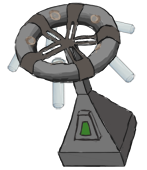
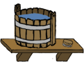

Table of Contents:
- Tools to Interact With- Items That Can be Used
- Identification
- The Process
Tools to Interact With:
|
Box of Unknown Solutions: Used to pick up the Unknown Solution for testing. |
 |
||
|

|
Centrifuge: Used to seperate precipitate from solutions in Test Tubes. |
||
|
Chemical Shelf: Used to collect Chemicals to use in the processes. |
|
||
 |
Heating Rack: Used to heat up either the Casserole or the Beaker for the processes. |
||
|
Ice Bath: Used to cool down solutions in Test Tubes. |
 |
||
|
|
Test Tube Rack: Used to pick up Test Tubes to use in the processes. |
||
|
Trash: Used to throw away items not needed anymore or for the time being. |
|
||
|

|
Water Bucket: Used to clean items after using them so they can be reused. |
||
Items That Can be Used:
|
Beaker: Used to heat up Test Tubes in combination with the Heating Rack. |
|
||
 |
Casserole: Used to heat up solutions for certain processes without the use of a Beaker. |
||
|
Chemicals: Used to mix with solutions to help solve what compounds are in the Unknown Solution. |
 |
||
 |
Eyedropper: Used to add Chemicals and mixed solutions to Test Tubes and the Casserole. |
||
|
Mixing Rod: Used to mix Chemicals into the Unknown Solution and other solutions for the processes. |
|
||
|
|
Nails: Used in the process of solving the components of the Unknown Solution. |
||
|
Test Tubes: Used to mix Chemicals in, hold solutions, and placed in the Centrifuge to receive precipitate. (Used in almost every step.) |
|
||
 |
Unknown Solution: The solution that is needed to be solved to complete the game. |
||
Identifing Present Ions


MERCURY (Hg2+)
A black to gray precipitate forming confirms the presence of Mercury (Hg2+.)
LEAD (Pb2+)
A yellow precipitate forming confirms the presence of Lead (Pb2+).
BISMUTH (Bi3+)
A black precipitate forming confirms the presence of Bismuth (Bi3+).
COPPER (Cu2+)
A precipitate forming confirms the presence of Copper(Cu2+).
A black to gray precipitate forming confirms the presence of Mercury (Hg2+.)
LEAD (Pb2+)
A yellow precipitate forming confirms the presence of Lead (Pb2+).
BISMUTH (Bi3+)
A black precipitate forming confirms the presence of Bismuth (Bi3+).
COPPER (Cu2+)
A precipitate forming confirms the presence of Copper(Cu2+).
CADMIUM (Cd2+)
A yello precipitate forming confirms the presence of Cadium (Cd2+).
ARSENIC (As)
A red-brown solution confirms the presence of Arsenic (As).
ANTIMONY (Sb3+)
An orange precipitate forming confirms the presence of Antimony (Sb3+).
TIN (Sb3+)
A white precipitate forming confirms the presence of Tin (Sb3+).
A yello precipitate forming confirms the presence of Cadium (Cd2+).
ARSENIC (As)
A red-brown solution confirms the presence of Arsenic (As).
ANTIMONY (Sb3+)
An orange precipitate forming confirms the presence of Antimony (Sb3+).
TIN (Sb3+)
A white precipitate forming confirms the presence of Tin (Sb3+).
All these steps must be followed in the order they appear.
Prepare the Unknown
Prepare the Unknown
Step 1 - Pour .50mL (10 drops) of unknown solution into casserole.
Step 2 - Add .50mL (10 drops) of 6M HCL to casserole.
Step 3 - Heat solution over burner. Allow to cool.
Step 4 - Add .60mL (12 drops) of 1M HCL to casserole
Step 5 - Mix the solution.
Step 6 - Add solution to a test tube for further testing.
On Completion, Click Here to Progress.
Seperate Group 2A from Group 2B
Step 1 - Add .70mL (14 drops) of 1M C2H5NS to solution.
Step 2 - Place solution in beaker filled with H2O and heat over burner.
Step 3 - Add .50mL (10 drops) of Hot H2O from beaker to solution.
Step 4 - Add .70ml (14 drops) of 1M C2H5NS to solution.
Step 5 - Add .10ml (2 drops) of 1M NH4C2H3O2 to solution.
Step 6 - Mix the solution.
Step 7 - Heat the solution.
Step 8 - Add 1.5mL (30 drops) of .5M KOH-1 M KNO3 to the solution.
Step 9 - Mix the solution.
Step 10 - Centrifuge the solution.
Step 11 - Decant the solution (Remove liquid from test tube and place in another test tube.) Save the precipitate for later.
On Completion, Click Here to Progress.
Prepare Group 2A
Step 1 - Add 1.0mL (20 drops) of .5M KOH-1 M KNO3 to the liquid solution.
Step 2 - Heat the solution.
Step 3 - Mix the solution.
Step 4 - Centrifuge the solution.
Step 5 - Add 1.5mL (30 drops) of NH4C2H3O2 to solution.
Step 6 - Heat the solution.
Step 7 - Mix the solution.
Step 8 - Decant and and discard the solution.
On Completion, Click Here to Progress.
CONFIRMATION TEST FOR MERCURY (Hg2+) ION
Step 1 - Add 1.25mL (25 drops) of 6M HCL to precipitate.
Step 2 - Add 0.25mL (5 drops) of 6M HNO3 to precipitate.
Step 3 - Heat the solution
Step 4 - Centrifuge the solution.
Step 5 - Add 0.50 mL (20 drops) of 0.2M SNCl2 to the solution.
On Completion, Click Here to Progress.
CONFIRMATION TEST FOR LEAD (Pb2+) ION
Step 1 - Add 0.35mL (7 drops) of 18M H2SO4.
Step 2 - Heat the solution.
Step 3 - Add 1.0 (20 drops) of H2O to an empty test tube.
Step 4 - Cool the H2O.
Step 5 - Pour solution into the test tube of Cool H2O.
Step 6 - Centrifuge.
Step 7 - Decant and save the solution for later.
Step 8 - To the precipitate, add 0.05 mL (1 drop) of 6M C2H4O2.
Step 9 - Then add 0.70mL (14 drops) of 1M NH4C2H3O2.
Step 10 - Heat in water bath.
Step 11 - Add 0.20 (4 drops) of 1M K2CRO4.
On Completion, Click Here to Progress.
CONFIRMATION TEST FOR BISMUTH (Bi3+) ION
Step 1 - Take the solution from Step 7 of the last Process.
Step 1 - Take the solution from Step 7 of the last Process.
Step 2 - Add 0.05mL (1 drop) of 15M NH3.
Step 3 - Mix the solution.
Step 4 - Repeat Step 2 & 3 until the solution turns clear.
Step 5 - Add 0.25 mL (5 drops) 15M NH3
Step 6 - Mix the solution.
Step 7 - Centrifuge.
On Completion, Click Here to Progress.
CONFIRMATION TEST FOR COPPER (Cu2+) ION
Step 1 - Take the solution from Step 7 of the last Process.
Step 2 - Add 0.50mL (10 drops) 6M C2H4O2.
Step 2 - Add 0.50mL (10 drops) 6M C2H4O2.
Step 3 - Add 0.15mL (3 drops) of 0.2M FeK4C6N6.
On Completion, Click Here to Progress.
CONFIRMATION TEST FOR CADMIUM (Cd2+) ION
Step 1 - Add 0.50mL (10 drops) of the solution from the previous process to a new test tube.
On Completion, Click Here to Progress.
Prepare Group 2B
Start with the precipitate from the first test.
Start with the precipitate from the first test.
Step 1 - Add 0.20mL (4 drop) of 6M C2H4O2.
Step 2 - Add 0.10mL (2 drops) of 1M C2H5NS.
Step 3 - Mix the solutio.
Step 4 - Heat the solution.
Step 5 - Centrifuge.
n
Step 6 - Decant and discard the solution.
Step 7 - Add 2.0mL (40 drops) of 2M NH4CL to the precipitate.
Step 8 - Mix the solution.
Step 9 - Heat the solution.
Step 10 - Decant and discard the solution.
Step 11 - Add 0.35mL (7 drops) H2O to the precipitate.
Step 12 - Add 1.0 mL (20 drops) of 12M HCL.
Step 13 - Heat the solution.
Step 14 - Mix the solution.
Step 15 - Centrifuge the solution.
Step 16 - Decant.
Step 17 - To precipitate, add 1.4mL (28 drops) of 6M HCL.
Step 18 - Centrifuge the solution.
Step 19 - Decant and add solution to solution from Step 16.
On Completion, Click Here to Progress.
CONFIRMATION TEST FOR ARSENIC (As) IONS
Step 1 - Add 0.30mL (6 drops) of H2O to the precipitate from the previous process.
Step 2 - Add 0.50mL (10 drops) of 1M NH4C2H3O2.
Step 3 - Heat the solution.
Step 4 - Centrifuge the solution.
Step 5 - Decant and discard the solution.
Step 6 - Add 1.5mL (30 drops) of 6M NH3 to the precipitate.
Step 7 - Mix the solution until yellow has disolved.
Step 8 - Centrifuge.
Step 9 - Decant and discard the precipitate.
Step 10 - Add 1.5mL (30 drops) of H2O2 to the solution.
Step 11 - Mix the solution.
Step 12 - Heat the solution.
Step 13 - Add 0.50mL (10 drops) of 2M NH4NO3 to the solution.
Step 14 - Mix the solution.
Step 15 - Add 0.50mL (10 drops) Mg(NO3)2.
Step 16 - Put in ice cold bath.
Step 17 - Centrifuge the solution.
Step 18 - Decant and discard the solution.
Step 19 - Add 0.50 mL (10 drops) of H2O to the precipitate.
Step 20 - Add 0.05 mL (1 drop) of 6M NH3.
Step 21 - Centrifuge the solution.
Step 22 - Decant and discard the solution.
Step 23 - Add 0.20 mL (4 drops) of 6M HC2H3O2 to the precipitate.
Step 24 - Add 0.50 mL (10 drops) of H2O.
Step 25 - Add 0.50 ml (10 drops) of 0.2M AgNO3.
Step 26 - Mix the solution.
Step 27 - Add .20mL (4 drops) of 6M NH3.
On Completion, Click Here to Progress.
CONFIRMATION TEST FOR ANTIMONY (Sb3+) IONS
Step 1 - Heat the solution.
Step 2 - Cool .50mL (10 drops) of cold H2O.
Step 3 - Add cold H2O to the solution.
Step 4 - Divide solution in half into 2 separate test tubes. Save 1 for later.
Step 5 - Add 2.0mL (40 drops) of 1M C2H2O4.
Step 6 - Mix the solution.
Step 7 - Add 0.50ml (10 drops) of 1M C2H5NS.
Step 8 - Heat the solution.
On Completion, Click Here to Progress.
CONFIRMATION TEST FOR TIN (Sn4+) IONS
Step 1 - Take second test tube from Step 4 in Process 11.
Step 2 - Add 2 small iron nails to the solution.
Step 3 - Heat the solution.
Step 4 - Remove iron nails.
Step 5 - Pour solution into a new test tube.
Step 6 - Add 1.0 mL (20 drops) of 0.10M HgCl2.
Step 7 - Mix the solution.
On Completion, Click Here to Progress.